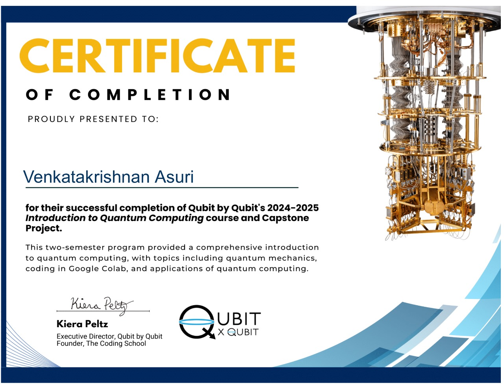

Undergraduate Student | IIT Madras
I'm Venkatakrishnan, a second-year undergraduate student at IIT Madras. I'm passionate about Economics and Mathematics.
Personal
I follow geopolitics and global markets keenly, and am passionate about languages and economics. I am a polyglot — I speak Russian, French, Hindi, and Tamil fluently. I love chess, and have loved it ever since I started playing at age 5. I'm not a foodie, but I'd never say no to dosa and filter coffee.
Education
IIT Madras
Bachelors in Engineering Physics
Expected Graduation: 2027
CPA: 8.84
Maharishi Vidya Mandir, Chetpet
High School
Class XII: 95.2%
DAV Boys School, Gopalapuram
Middle School
Class X: 97.6%
Projects
Time Series Modelling
In progress
Forecasting non-standard time series, beyond ARIMA — exploring alternative models.
Supervisor: Prof. Anindya S Chakrabarti, IIM Ahmedabad
Quantum Computing - Google QuantumAI
Completed
Completed a two-semester hands-on quantum computing course by Google QuantumAI, securing an A grade with a score of 99%.
Certificate of completion:

Initiatives & Talks
SGN2024: Spins, Games and Networks
December 11-24, 2024 | IMSc Chennai
Attended SGN2024 at IMSc, Chennai — interdisciplinary workshop on complex systems. Presented ideas on spin models.
Achievements
Competitive Exams
- JEE Advanced 2023: All-India Rank 1236 out of 150,000 candidates
- JEE Mains 2023: All-India Rank 1773 out of 2,200,000 candidates
- ISI B.Math Entrance 2023: All-India Rank 34
- IISER Aptitude Test 2023: All-India Rank 286 out of 35,000 candidates
- NEST 2023: All-India Rank 35 out of 45,000 candidates
Olympiads & Scholarships
- NTSE Scholar 2021: Ranked among the top 2000 of 100,000 candidates nationwide
- INChO 2023: Placed among the top 1% in NSEC and qualified for INChO 2023
- NSEP 2023: Placed among the top 1% of the state in NSEP 2023
- INOI 2021 & 2020: Cleared Zonal Informatics Olympiad and qualified for INOI 2020, 2021
Extracurriculars
- Carnatic Musician: Trained in Carnatic Vocal for 13 years and play the Carnatic Violin
- Chess Player: Playing actively for 14 years and participated in tournaments
- Artist: Completed 10 course levels with a certificate at GlobalArt India
- Football Player: Played for Mahogany FC for 8 years, competing in city-level tournaments
- Polyglot: Fluent in Russian (completed 2 levels) and French; proficient in Tamil, Hindi, and Sanskrit
- Geopolitics Enthusiast: Keenly follow global financial markets and geopolitics